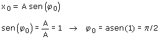
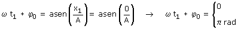
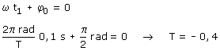
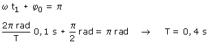

a) Ecuación de posición:
Empezaremos determinando la fase inicial: Aplicación: Supongamos que está en el extremo derecho Datos: t0 = 0, x0 = A  Se veía venir el resultado (•) Y ahora calculamos la frecuencia angular Aplicación: Pasa por el origen en la primera oscilación (k = 0) Datos: x1 = 0, t1 = 0.1 s  Comprobamos cual de las dos soluciones vale:  No puede ser un periodo negativo  Evidente: se tarda un cuarto de período en ir de un extremo al centro luego el período será 0.4 s |